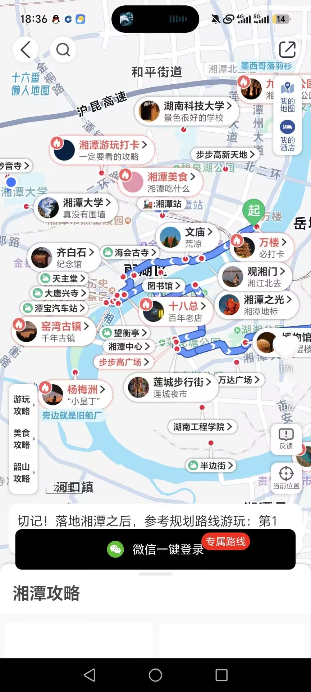

12 天冲刺方案 —— 从一张地图，到一个能答辩的作品
把湘潭的景点、美食、老街，从"一篇文章"变成"地图上一个个能点开的点"，再串成能照着走的路线。 —— 产品定位，也是答辩开场那句话
places.js；图片走云存储；打卡记录走云数据库成功标准只有一句：真机打开 → 地图有 30 个点 → 筛选 / 点开 / 详情 / 导航全通 → 路线能看 → 打卡能记。
wx.getLocation 要在后台申请、可能不批；手动打卡降级是必做项。
12 天最大的敌人不是技术，是"再加一个功能"。所以先划死线：P0 做不完，P1 直接砍。
答辩就靠这 7 项，一个都不能少
11/6–11/7，做不完就砍
别碰，碰了就延期
| 选择 | 理由 |
|---|---|
| 原生小程序，不用 Taro / uni-app | 12 天不够踩框架编译坑。原生 + 内置组件是故障面最小的路径。 |
| 不引入 npm 构建链 | 少吃一类"构建失败 / 依赖版本冲突"的亏；Vant 之类按需再上。 |
| 不做个性化地图 | subkey 2023-06 起要在后台付费购买、工具内不能调试、只能真机验证。默认样式 + 自绘 marker 已经够好看。 |
| POI 不进数据库 | 客户端查库默认只回 20 条，60 条要分 3 页拉——纯属自找麻烦。本地 JSON 55KB，require 即用。 |
| 打卡不用云函数 | checkins 权限设"仅创建者可读写"：查询自动过滤成自己的记录，写入自动带 _openid。省掉云函数、登录、token。 |
| 不调腾讯地点搜索 API | 免费额度每日仅 200 次，还要配合法域名。搜索走本地过滤，够用且零风险。 |
| 路线折线离线生成 | 跑一次脚本存进 routes.js，运行时零 API 调用。手绘 8–12 个拐点都够看。 |
<cover-view slot="callout" marker-id>。首页只给 3–5 个重点位设 ALWAYS，其余 BYCLICK——30 个气泡同时展开会糊成一片。
wx.storage 合并展示；图片 404 → 灰底占位；无网络 → 友好提示不白屏。这三种状态必须各留半天做。
pages/
├─ map/ 地图首页（tab1，核心，占 40% 工作量）
├─ routes/ 路线页（tab2）
├─ mine/ 我的 / 足迹（tab3）
├─ detail/ 点位详情（非 tab）
└─ route-detail/ 单条路线详情（非 tab，地图模式）
components/
├─ poi-card/ POI 卡片（地图底部卡片、列表复用）
└─ tag-bar/ 分类筛选条（复用）
data/
├─ places.js 30–60 个点位
└─ routes.js 3 条路线的折线坐标只做 3 个 tab。第四个 tab（发现/攻略）砍掉——和地图内容高度重复，删了不影响演示。
结论先放：有现成轮子，但只有一个能合法拿来用。其余项目只做"看着它写"。
| 项目 | 技术栈 | 许可证 | 复用 | 说明 |
|---|---|---|---|---|
| map-marker-miniprogram 87★ |
原生 JS + 云开发 | Apache-2.0 | 高 · 首选基座 | 就是"标点地图"模板：分类图标 / 列表 / 搜索 / 详情 / 导航全有，城市中心点是一个配置项。代码有瑕疵但结构对。 |
| LYWL 洛阳文旅 2★ |
原生 TS + NestJS | 无 License | 中 · 产品参考 | 最像我们要做的产品：四个 tab、古风手绘地图标点、POI 字段模型、需求文档齐全。但自带一整套后端 + 假登录，只能借鉴思路。 |
| NFU-Guide-Map MIT |
原生 TS + gulp | MIT | 中 · 数据管线 | 配置化 marker 样式、Excel→JSON + pandas 清洗管线可抄思路。7 年未更新；图片明确禁止盗用。 |
| wetour 77★ |
Taro + 云开发 | 无 License | 中 · 打卡逻辑 | 打卡 + 行程 + 评论最完整。Taro 锁死 1.3.18，别拿它当基座。 |
| 动作 | 位置 | 说明 |
|---|---|---|
| 改配置 | miniprogram/config.js | 中心点 → 湘潭（约 112.94 / 27.85）、appName、envID、default_scale 调 11–12 |
| 换数据源 | pages/map/map.js 的 getMarkerData | 云函数 getStore → require('../../data/places.js')；三分法分类 → 六分类 |
| 复用详情页 | pages/info | 换字段绑定即可；补"导航 / 打卡 / 本地提示" |
| 复用列表与搜索 | pages/allList、pages/search | 列表 = 路线点位列表；搜索改本地过滤 |
| 砍掉 | pages/add、pages/share、painter/、cloudfunctions/* | 上传 / 海报 / 分享 / 管理员都不做，能省 500KB+ 和一堆坑 |
| 修 bug | map.js:83 | if (res.result.errMsg = "ok") 是赋值不是比较 |
| 换废弃 API | map.js:270 | wx.getUserProfile 已废弃 → 删登录逻辑，直接用 openid |
如果适配超过 1.5 天，果断放弃基座、按本方案自建（5 个页面约 1500 行，AI 辅助 2 天能出）。基座是省时间的，不是供起来的。
LICENSE、README 注明来源。目标：P0 30 个点（撑满地图、够 3 条路线），冲刺 60 个；3 条路线，每条 5–7 个点。
| 分类 | 点位 |
|---|---|
| 景点 / 古迹 | 万楼、观湘门、文庙、海会古寺、大唐兴寺、天主堂、昭山、白石公园、雨湖公园、和平公园、菊花塘公园、湘潭之光、望衡亭 |
| 古镇 / 街区 | 窑湾古镇、十八总、杨梅洲、莲城步行街、万达广场、步步高广场 |
| 红色 | 韶山毛泽东故居、铜像广场、纪念馆、滴水洞、韶峰、乌石彭德怀故居 |
| 学府 | 湘潭大学、湖南科技大学、湖南工程学院 |
| 美食 | 灯芯糕、脑髓卷、湘潭米粉、毛氏红烧肉、槟榔、湘莲、火焙鱼（挂到具体店铺/街区） |
30 个 P0 点建议配比：景点 12 + 古镇街区 6 + 红色 6 + 学府 3 + 美食 3。
data/places.js）{
id: 'wanlou',
name: '万楼',
category: 'scenic', // scenic / food / oldtown / red / school
tags: ['地标', '夜景'],
lat: 27.8712, lng: 112.9445, // 必须 GCJ-02，与地图组件一致
cover: 'cloud://xxx/wanlou.jpg',
summary: '一句话（≤30 字，卡片显示）',
intro: '80–120 字简介',
localTip: '本地人提示（傍晚去，江风+灯光最好）',
address: '湘潭市雨湖区…',
openTime: '08:00-18:00 / 全天',
durationMin: 60,
routeIds: ['oldtown']
}places.js 只存 fileID。places.js（可借鉴 NFU 的 example/ 管线）。假设 3 人、每天有效投入 3–4 小时。按半天为最小单位，当天没有可运行的产出，就算这天没过。
地图页、路线页、marker / polyline / 气泡、性能调优。
详情页、我的页、打卡、云数据库、全局状态与兜底。
30→60 个点采集、文案、图片、PPT、演示脚本、README。
docs/screenshots/，最后做 PPT 和录屏直接取材，不用返工。| 风险 | 概率 | 预案 |
|---|---|---|
| 个人主体选不了「旅游-景区服务」类目 | 确定 | 本来就不上架。开发版 / 体验版 + 手机投屏答辩；文档写"拟以企业主体上线"。 |
wx.getLocation 后台申请不下来 |
高 | 2022-07 后须在 app.json 声明 requiredPrivateInfos 并在后台「接口设置」申请。个人主体可用「工具-信息查询」类目申请（场景含地理打卡），但能否通过以后台为准——所以手动打卡降级是必做项。 |
| 云开发免费环境有坑 | 中 | 免费环境活动至 2026-12-31、发布后 15 天到期。先把本地 JSON + storage 跑通，云只做"能上就上"的增强。 |
| 主包 2MB 超限 | 高 | 图片全部走云存储，包内只留图标和 ≤1 张示例图。 |
| 基座代码老旧 / 有 bug | 中 | 1.5 天没改顺就自建，别在别人的烂代码上熬。 |
| marker 太多导致卡顿 | 中 | 每分类 ≤15 个；ALWAYS 气泡只给重点位；预留点聚合开关。 |
| 抄代码导致软著 / 原创性存疑 | 中 | 只用 Apache-2.0 / MIT 并保留声明；无 License 项目只参考。 |
| 图片侵权 | 中 | 自拍 / 授权图，或明确标注"演示用图"。 |
| 队友掉队 | 中 | 任务粒度 ≤1 天；D8 功能冻结兜底。 |
mp.weixin.qq.com → 个人主体 → 拿 AppID；顺手在「开发管理-云开发」建免费环境。
git init；git clone --depth 1 基座到 _ref；开发者工具导入 miniprogram/，填 AppID / envID，中心点改湘潭。
看到湘潭地图 + 5 个硬编码 marker，第一天就算成功。